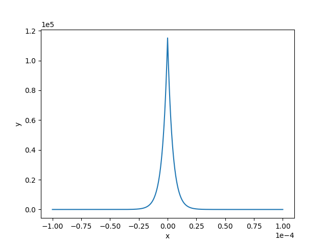
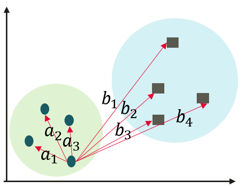
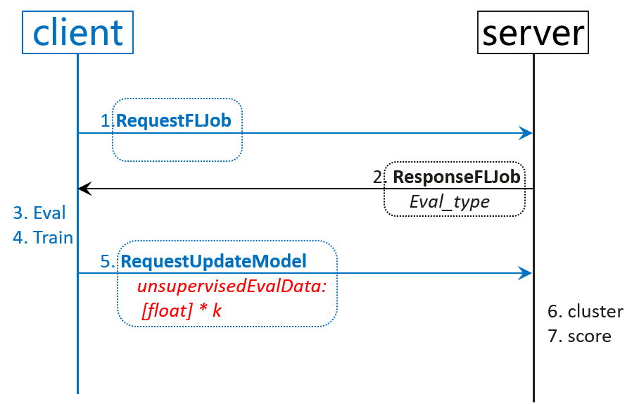
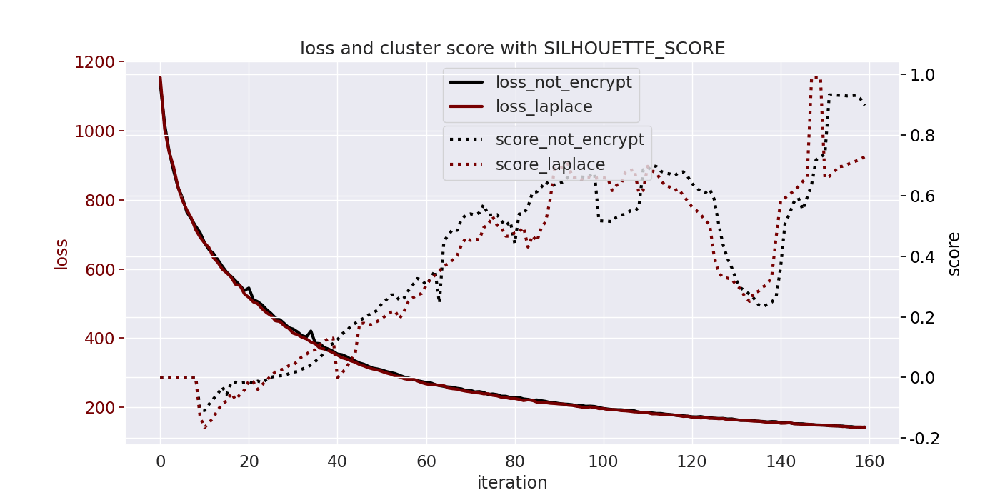

横向联邦-局部差分隐私推理结果保护¶

隐私保护背景¶
评价联邦无监督模型训练的好坏，可通过端侧反馈的\(loss\)判断，也可利用端侧推理结果结合云侧聚类及聚类评估指标，来进一步监测联邦无监督模型训练进度。后者涉及到端侧推理数据上云，为满足隐私保护要求，需要对端侧推理数据进行隐私保护处理，同时云侧仍可进行聚类评估。该任务相较训练任务为辅助任务，则尽量使用轻量级算法，不能引入较训练阶段计算或通讯开销更大的隐私保护算法，本文介绍了一种利用局部差分隐私Laplace噪声机制保护推理结果的轻量级方案。
将隐私保护技术有效地融入到产品服务中，一方面有利于提升用户以及业界对产品及技术的信任度，另一方面有助于在满足当前隐私合规要求之下更好地开展联邦任务，打造全生命周期（训练-推理-评估）的隐私保护。
算法分析¶
\(L1\)与\(L2\)范式¶
长度为\(k\)的向量\(V\)的\(L1\)范数为 \(||V||_1=\sum^{k}_{i=1}{|V_i|}\)，则在二维空间中，两个向量差的\(L1\)范数就是曼哈顿距离。
\(L2\)范数为 \(||V||_2=\sqrt{\sum^{k}_{i=1}{V^2_i}}\)。
推理结果一般为\(softmax\)结果，和为\(1\)，向量的各个维度值表示所属该维度对应类别的概率。
\(L1\)与\(L2\)敏感度¶
本地差分隐私对要上传的数据引入不确定性，敏感度描述了不确定性的上界。在优化器和联邦训练中，可以给梯度添加\(L2\)敏感度的高斯噪声，因为添加前会对梯度向量进行裁剪操作。此处\(softmax\)推理结果满足和为\(1\)，因此添加\(L1\)的拉普拉斯噪声。对于\(L2\)灵敏度远低于\(L1\)灵敏度的应用程序，高斯机制允许增加更少的噪声，但该场景没有\(L2\)相关的约束限制，仅使用\(L1\)敏感度。
\(L1\)敏感度在本地差分隐私中表现为定义域内任意输入的最大距离：
\(\Delta f=max||X-Y||_1\)
在本场景中，\(X=<x_1, x_2, ..., x_k>, Y=<y_1, y_2, ..., y_k>, \sum X = 1, \sum Y = 1, |x_1-y_1|+|x_2-y_2|+...+|x_k-y_k|\leq1=\Delta f\)。
Laplace机制¶
\(M(x,\epsilon)=X+Lap(\Delta f/\epsilon)\)
其中，\(Lap(\Delta f/\epsilon)\)是和\(X\)同shape，独立同分布的随机变量向量。
在此场景中，\(b\)（又叫\(scale\)、\(lambda\)，\(beta\)）为\(1/\epsilon\)。
证明拉普拉斯机制是满足\(\epsilon-LDP\)的¶
任意两个不同的客户端，经过拉普拉斯机制处理之后，都输出相同结果来达到混淆不可区分的目的概率比有上确界。将\(b=\Delta f/\epsilon\)代入得到:
\(Lap(\Delta f/\epsilon)=\frac{\epsilon}{2\Delta f}exp(-\frac{\epsilon|x|}{\Delta f})\)
\(\frac{P(Z|X)}{P(Z|Y)}\)
\(=\prod^k_{i=1}(\frac{exp(-\frac{\epsilon|x_i-z_i|}{\Delta f})}{exp(-\frac{\epsilon |y_i-z_i|}{\Delta f})})\)
\(=\prod^k_{i=1}exp(\epsilon\frac{|x_i-z_i|-|y_i-z_i|}{\Delta f})\)
\(\leq\prod^k_{i=1}(\epsilon\frac{|x_i-y_i|}{\Delta f})\)
\(=exp(\epsilon\frac{X-Y}{\Delta f})\)
\(\leq exp(\epsilon)\)
\(\epsilon\) 的确定与对应的概率密度图¶
结合数据特点计算出可用性较高的隐私预算，比如要求大概率输出\(1e-5\)量级的噪声，否则会直接严重影响聚类结果。下面给出产生指定量级噪声对应的隐私预算计算方法。
\(90\%\)概率输出\(1e-5\)量级的大小，对概率密度曲线积分得到\(\epsilon\)的取值。
\(x>=0, Lap(x|b)=\frac{1}{2b}exp(-\frac{x}{b})\)
\(\int^ {E^{-5}}_0 {Lap(x|b)dx}\)
\(=1-\frac{1}{2}exp(-\frac{x}{b})|^{E^{-5}}_{0}\)
\(=\frac{1}{2}(exp(0)-exp(-\frac{E^{-5}}{b}))\)
\(=0.5(1-exp(-\frac{E^{-5}}{b})) = 0.45\)
即：
\(exp(-\frac{E^{-5}}{b})=0.1\)
\(b=-E^{-5}/ln(0.1)=E^{-5}/2.3026=1/\epsilon\)
\(\epsilon=2.3026E^5\)
当隐私预算取该值时，拉普拉斯概率密度函数如下：

聚类评价指标的影响性分析¶
以Calinski-Harabasz Index评估方法举例，该评价指标计算过程分为两步：
每个类计算该类中所有
点到该类中心距离的平方和；计算每个
类与类中心距离平方和；
源码实现与加噪之后的影响性分析：
# 1.云侧聚类算法得到所属类序号，有影响
n_labels = argmax(X)
extra_disp, intra_disp = 0.0, 0.0
# 2.计算所有点的类中心，不影响
mean = np.mean(X, axis=0)
for k in range(n_labels):
# 3.得到第k类中的所有点，基于1的影响
cluster_k = X[labels == k]
# 4.得到该类中心，基于1的影响
mean_k = np.mean(cluster_k, axis=0)
# 5.该类与所有类中心距离，基于1的影响
extra_disp += len(cluster_k) * np.sum((mean_k - mean) ** 2)
# 6.点到该类中心距离，有影响
intra_disp += np.sum((cluster_k - mean_k) ** 2)
return (
1.0
if intra_disp == 0.0
else extra_disp * (n_samples - n_labels) / (intra_disp * (n_labels - 1.0))
)
综合分析，主要影响在加噪之后对聚类算法的影响，还有距离计算上的误差。在计算类中心时，由于噪声和期望为\(0\)，所以引入的误差较小。
以SILHOUETTE SCORE举例，该评价指标计算过程分为两步：
计算一个样本点\(i\)与同簇的其他所有样本点的平均距离，记为\(a_i\)；该值越小，表示样本\(i\)越应该分到这个簇。
计算样本\(i\)到其他某簇\(C_j\)的所有样本的平均距离\(b_{ij}\)，称为样本\(i\)与簇\(C_j\)的不相似度。定义为样本\(i\)的簇间不相似度：\(b_i = min(b_{i1}, b_{i2}, …, b_{ik})\).该值越大，说明样本\(i\)越不应该属于这个簇。

\(s_i=(b_i-a_i) / max(a_i, b_i)\).
\(a_i\)越小，\(b_i\)越大，结果为\(1-a_i / b_i\)就越接近\(1\)，聚类效果越好。
伪代码实现与加噪之后的影响性分析：
// 计算距离矩阵，空间换时间，上三角存储, 加噪有影响
euclidean_distance_matrix(&distance_matrix, group_ids);
// 对每个点都进行相同的计算，最后计算均值
for (size_t i = 0; i < n_samples; ++i) {
std::unordered_map<size_t, std::vector<float>> b_i_map;
for (size_t j = 0; j < n_samples; ++j) {
size_t label_j = labels[j];
float distance = distance_matrix[i][j];
// 同簇计算ai
if (label_j == label_i) {
a_distances.push_back(distance);
} else {
// 非同簇计算bi
b_i_map[label_j].push_back(distance);
}
}
if (a_distances.size() > 0) {
// 计算该点距离同簇其他点平均距离
a_i = std::accumulate(a_distances.begin(), a_distances.end(), 0.0) / a_distances.size();
}
for (auto &item : b_i_map) {
auto &b_i_distances = item.second;
float b_i_distance = std::accumulate(b_i_distances.begin(), b_i_distances.end(), 0.0) / b_i_distances.size();
b_i = std::min(b_i, b_i_distance);
}
if (a_i == 0) {
s_i[i] = 0;
} else {
s_i[i] = (b_i - a_i) / std::max(a_i, b_i);
}
}
return std::accumulate(s_i.begin(), s_i.end(), 0.0) / n_samples;
同上，主要影响在加噪之后对聚类算法的影响，还有距离计算上的误差。
端侧Java实现¶
Java基本库中没有生成Laplace分布随机数的函数，采用如下随机数的组合策略产生。
源码如下：
float genLaplaceNoise(SecureRandom secureRandom, float beta) {
float u1 = secureRandom.nextFloat();
float u2 = secureRandom.nextFloat();
if (u1 <= 0.5f) {
return (float) (-beta * log(1. - u2));
} else {
return (float) (beta * log(u2));
}
}
在端侧获得新一轮模型后，立即执行推理计算，等待训练结束之后，连同新模型和隐私保护之后的推理结果一同上传至云侧，云侧最终执行聚类和分数计算等操作。流程见下图，其中红色部分为隐私保护处理的输出结果：

快速上手¶
准备工作¶
若要使用该功能，首先需要成功完成任一端云联邦场景的训练聚合过程，实现一个端云联邦的图像分类应用(x86)详细介绍了数据集、网络模型等准备工作，以及模拟启动多客户端参与联邦学习的流程。
配置项¶
云侧yaml配置文件给出了开启端云联邦的完整配置项，该方案涉及到的新增配置文件项如下：
encrypt:
privacy_eval_type: LAPLACE
laplace_eval:
laplace_eval_eps: 230260
其中privacy_eval_type目前仅支持NOT_ENCRYPT和LAPLACE，分别表示不使用隐私保护方法处理推理结果和使用LAPLACE机制处理。
laplace_eval_eps表示如果使用LAPLACE处理，所使用的的隐私预算为多少。
实验结果¶
推理结果评估函数相关的基本配置使用如下：
unsupervised:
cluster_client_num: 1000
eval_type: SILHOUETTE_SCORE
观察在使用NOT_ENCRYPT和使用laplace_eval_eps=230260的LAPLACE机制下，\(loss\)与分数之间的关系如图所示：

红色虚线为使用Laplace机制保护推理结果后的SILHOUETTE分数，由于模型中含有\(dropout\)和高斯输入，两次训练的\(loss\)略微不同，基于不同的模型得到的分数也有略微不同。但整体趋势保持一致，可以辅助\(loss\)一起检测模型训练进展。